生成: pc/analyze_v1_6_fftdiff.py ・
入力: 各 version の pc/captures/full_32_train_vN/ ・
特徴量: 16 kHz / 2 s noise excitation の 1024-bin Welch log-mag PSD ・
基準: 各 version 自身の s00000 全閉フレーム平均
過去 (v1〜v5 採取時) のハードは ブレッドボード配線 + 470 µF 電源コンデンサ。 v6 採取時にハードを ユニバーサル基板の固定配線 に変更し、 さらに 470 µF を一時的に外していた期間がある。
この変更後、v12345_BLJIT モデルの実機 32cls 推論精度が 100% (5/24) → 59% (5/30) に劣化した。 「学習時と推論時のハード/特徴量分布が変わってしまったため」という仮説を v1〜v6 の FFT-diff で検証する。
| version | n_states | |diff| 平均 (dB) | |diff| 最大 (dB) | c_flipA (AB 閉 / c 単独) (dB) | c_flipB (AB 開 BC 閉 / c 単独) (dB) |
|---|---|---|---|---|---|
| v1 | 32 | 2.765 | 29.02 | 0.268 | 0.400 |
| v2 | 32 | 2.678 | 26.28 | 0.315 | 0.193 |
| v3 | 32 | 2.733 | 27.06 | 0.244 | 0.202 |
| v4 | 32 | 2.686 | 24.82 | 0.204 | 0.190 |
| v5 | 32 | 2.715 | 24.68 | 0.192 | 0.221 |
| v6 | 32 | 2.690 | 26.74 | 0.263 | 0.365 |
c_flip_A は 「AB が閉じている状況で c だけ動かしたときに何 dB スペクトルが変わるか」。
AB closed の物理は「room A しか観測できない」はずだが、現実の扉は完全遮音ではないので
微弱な漏れが残る。これを学習できれば「閉じた扉の向こう側」を推測できる。
c_flip_A = 0.263 dB、c_flip_B = 0.365 dB は
v1 (0.268 / 0.400) とほぼ同等で、むしろ v3〜v5 (0.19〜0.24 / 0.19〜0.22) より 強い。
「信号情報が消えた」のではなく、形状・周波数分布が変わったと解釈すべき。
縦軸: 14 等価クラス順にソートした 32 状態 / 横軸: 0〜8 kHz の 1024 bin / 色: 青 (baseline より低い) ↔ 赤 (高い)、± 8 dB スケール。
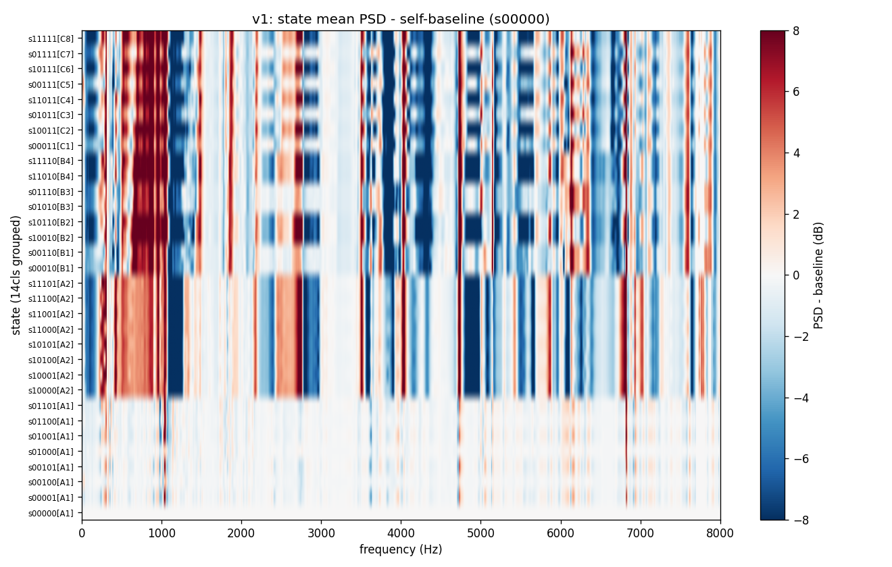
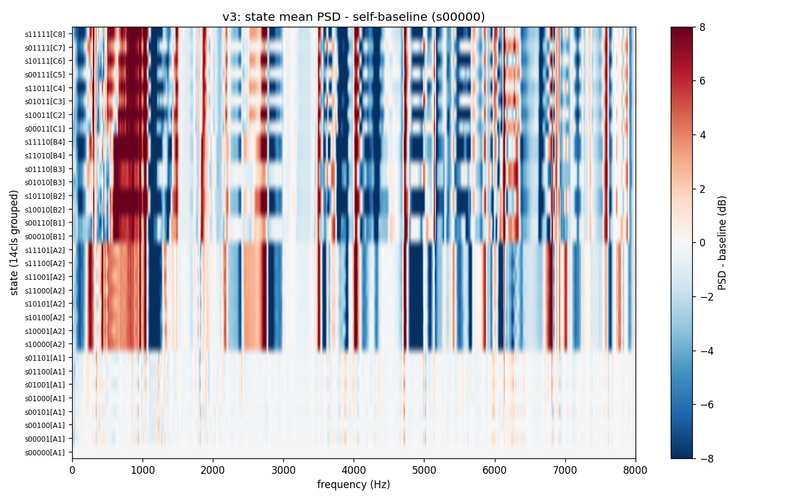
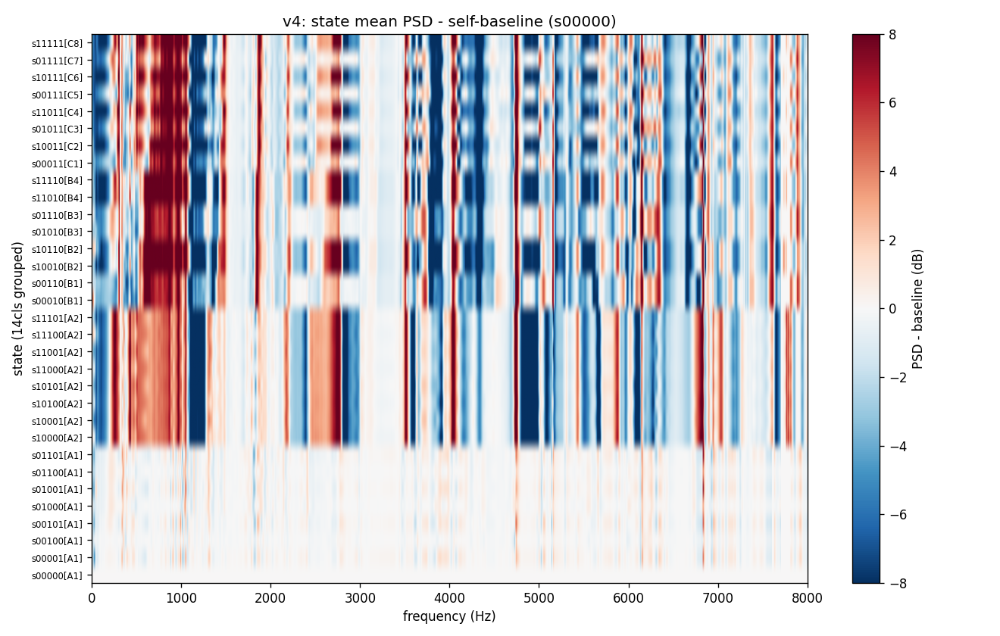
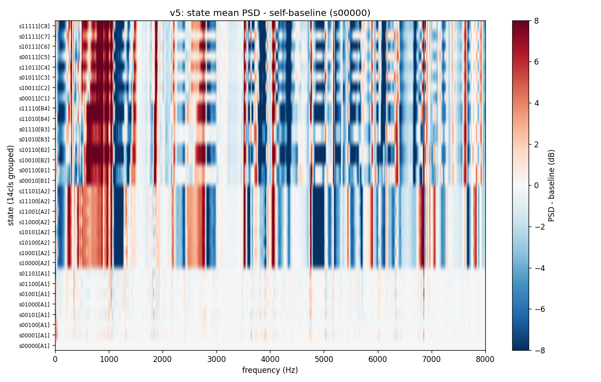
各 state について、v6 と「v1〜v5 平均」の per-bin 差。 これが ハード/環境変化で生じた系統誤差。 バンド構造があれば「特定の周波数帯で系統的に何 dB ずれた」と読める。
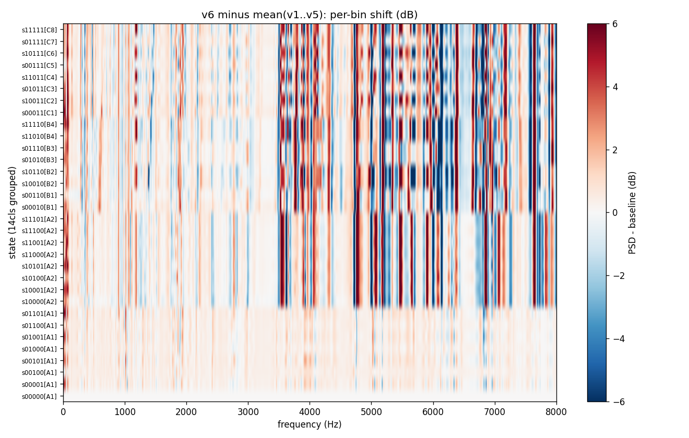
各 state について「全 version の diff-from-self-baseline」を 1 グラフに重ねた。 v6 のラインが他と 同じ場所で同じ向きに動いていれば形状保存、 違うピーク位置・違う振幅なら特徴シフト。
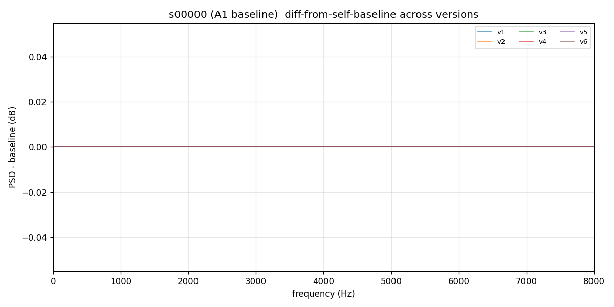
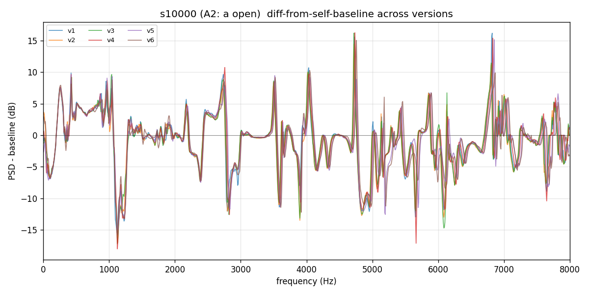
ここが「閉じた扉の向こうを見る」核心。v1〜v5 でこの微弱な信号を学習できていれば c=1 を当てられる。v6 でも同じ形なら新 ハードでも学習可能。
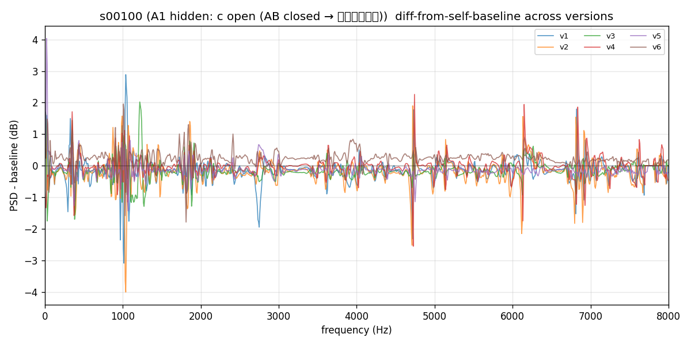
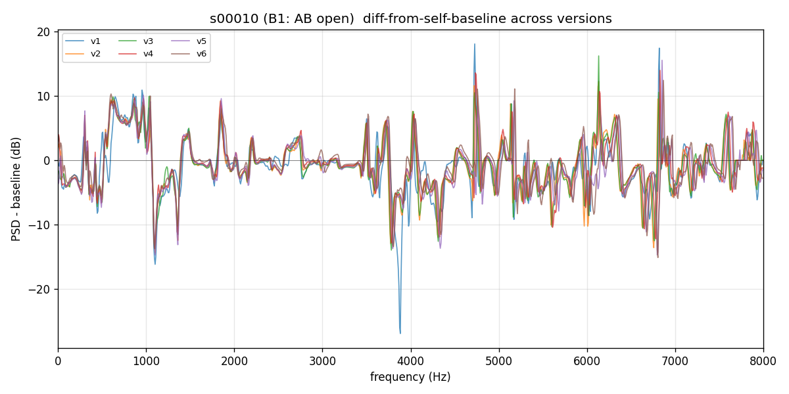
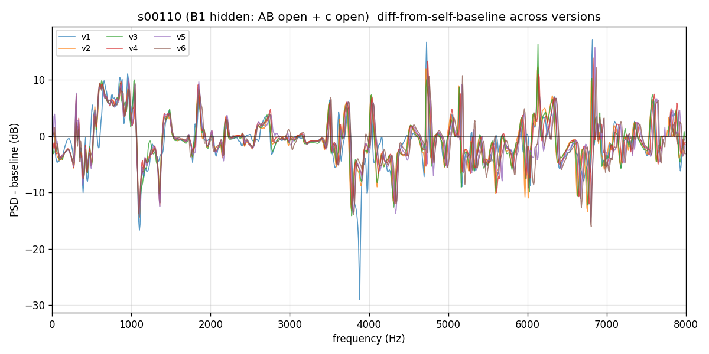
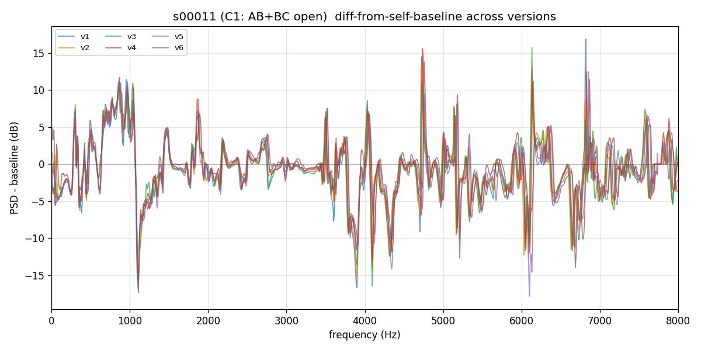
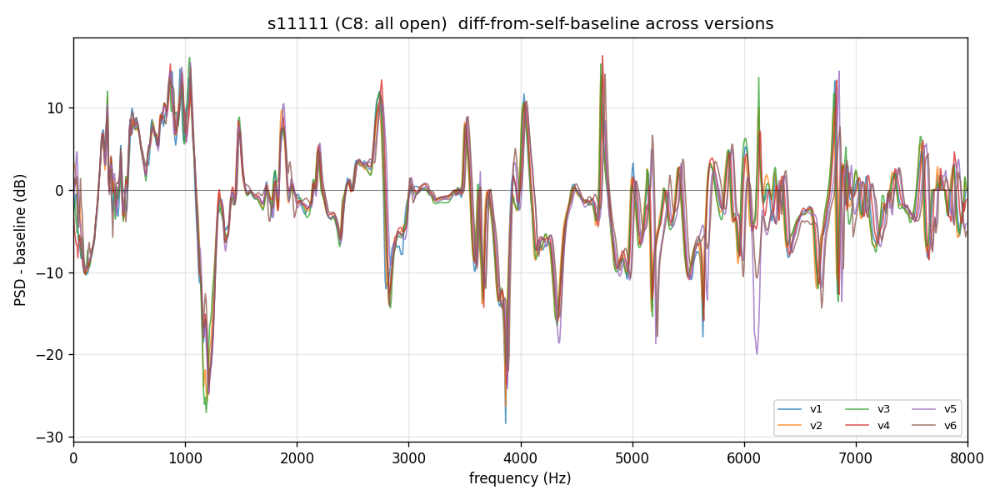
v6 の信号情報量は十分保持されている:
つまり v6 でも 32cls 識別に必要な信号は届いている。 BLJIT が v6 で誤るのは「v1〜v5 で学んだスペクトル形状が v6 では別の形に現れている」 ためで、新ハードのデータで学習し直せば回復すると予測される。
次のアクション:
plans/full_32_train_v{7,8,9,10}.yaml として生成済。
_run_v6_10_pipeline.py として準備済。
v1〜v5 は捨てる (旧ハード時代の分布で訓練すると新ハードへの誤汎化が起きる懸念)。